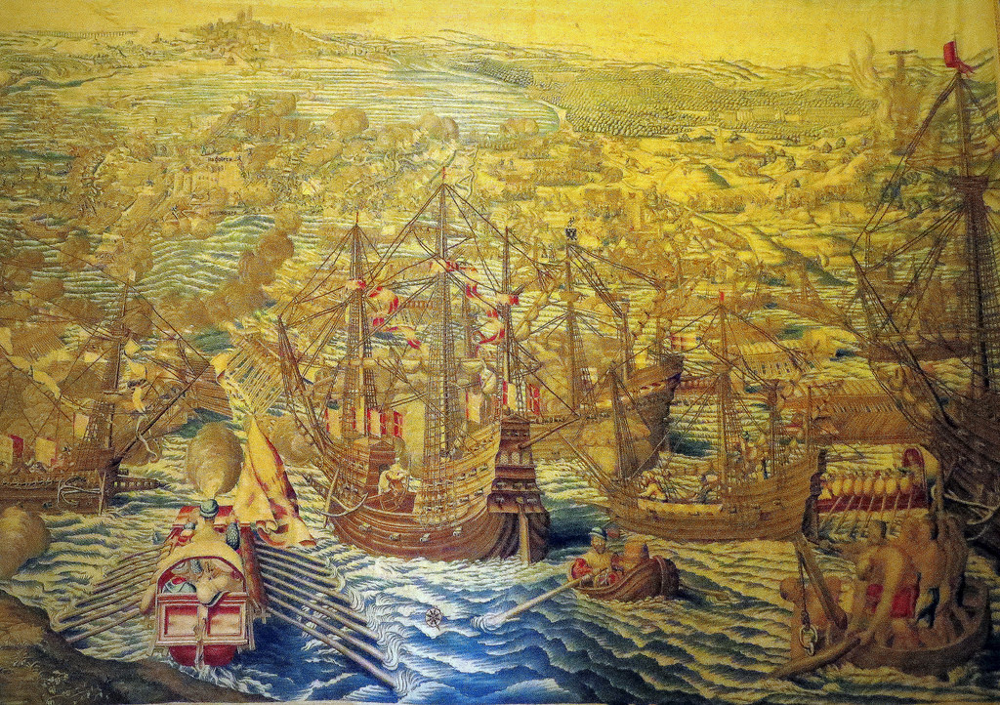
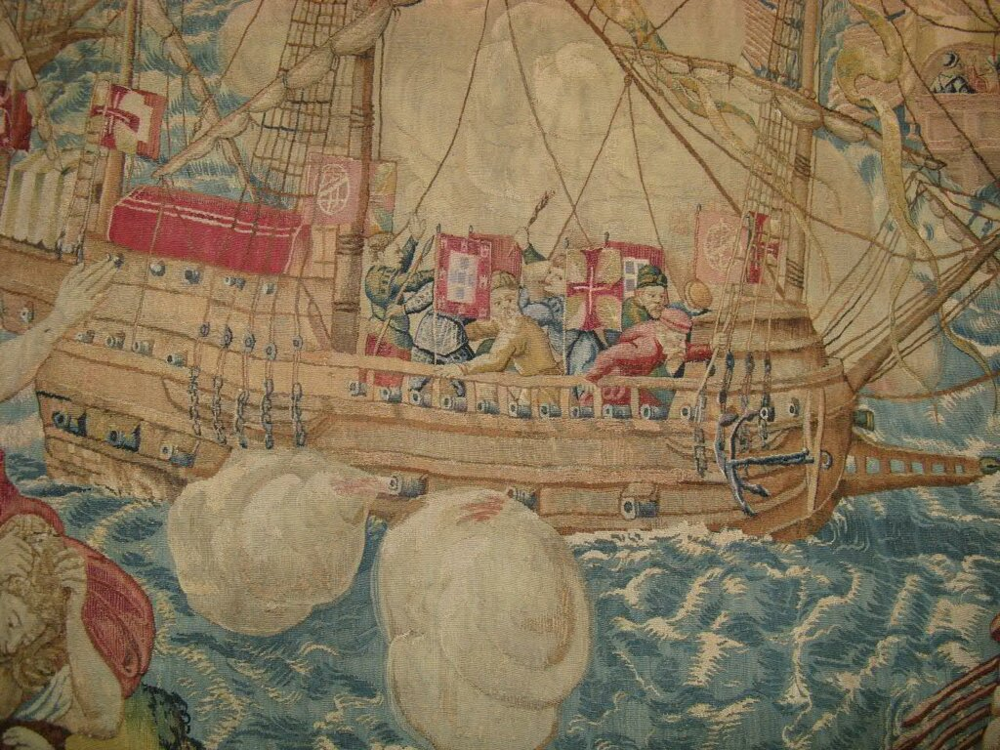
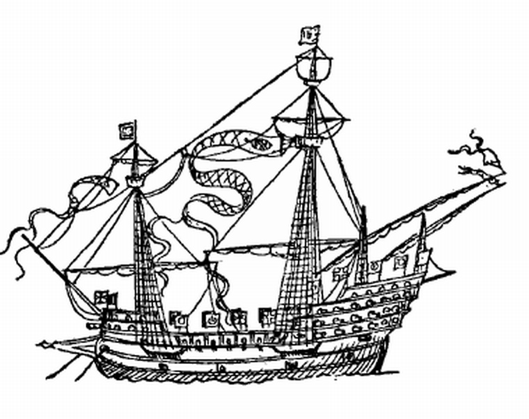
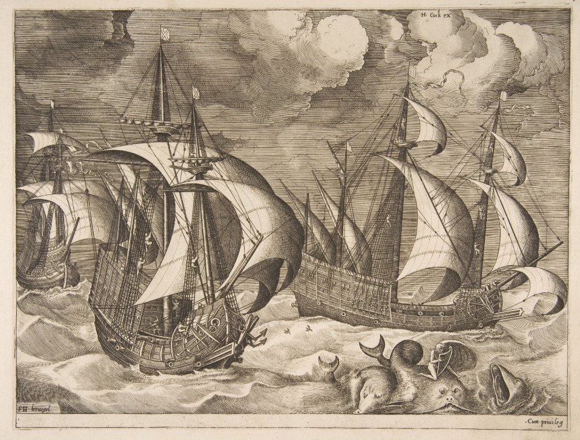
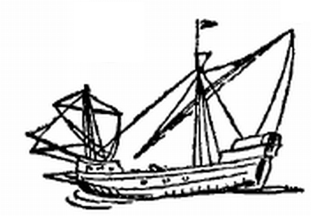
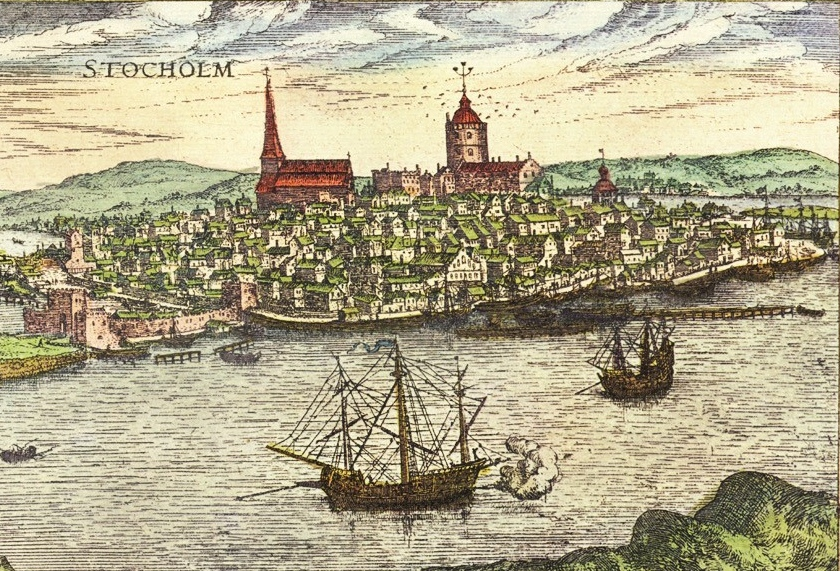
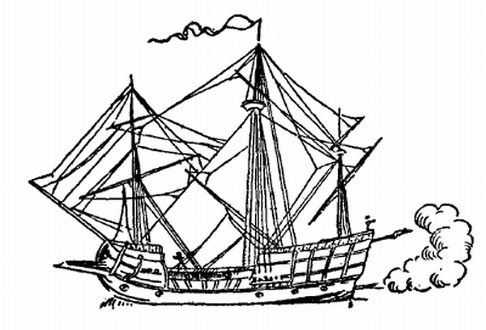

Парусные корабли с галерным шпироном на носу: навы? галеоны? каракки?
Он говорил: «Смотрите, для примера
Я несколько приму античных поз:
Вот так стоит Милосская Венера;
Так очертанье Вакха создалось;
Вот этак Зевс описан у Гомера;
Вот понят как Праксителем Эрос,
А вот теперь я Аполлоном стану», ―
И походил тогда на обезьяну.
А. К. Толстой. Портрет

Завоевание Туниса. 1535. Шпалера по эскизу Яна Вермеена.
Рассматривая некоторые иллюстрации к нашим предыдущим постам, порой заходишь в тупик, решая, к какому типу отнести изображенные на них корабли.
Взять хотя бы прекрасные гравюры Брюгеля. Корнелис Ван Эйк ((«Нидерландское искусство кораблестроения в подробном описании ». Cornelis Van Yk, De nederlandsche scheepsbouwkunst open gestelt, 1697 год.), копируя некоторые из кораблей с листов Брюгеля, называет их каракками. Предполагает, что это каракки и Огюстен Жаль, однако без большой уверенности. Но чем эти изображения отличаются от изображений навы (нефа) той эпохи? Пожалуй лишь тем, что они крупнее, глубже сидят в воде и имеют более высокие надстройки. А теперь сравним эти изображения с гравюрами из Orbis Civitates Terrarum Брауна и Хогенберга (1572), где такие же корабли под флагом Португалии изображены в далеких портах Востока. Эти корабли признаны каракками, значит, это же относится и к похожим кораблям на других изображениях.
Но с таким же успехом мы можем назвать эти корабли галеонами, так как они подходят под принятое историками описание этих кораблей и, более того, на некоторых из гравюр изображенные корабли находятся под флагами Испании. И что особенно важно, на части изображений носовая часть этих кораблей украшена шпиронами, какие принято было устанавливать на галерах. А такие шпироны на парусных кораблях во времена Брюгеля считались верным признаком галеона.

Взятие Туниса. Фрагмент шпалеры. Мастерская De Pannemaker(1564) из коллекции кардинала Гранвелле. Автор эскиза Jan Cornelisz Vermeyen. Фото Peter Meuris.
Документы подтверждают тот факт, что при взятии Туниса в 1535 году действительно присутствовал португальский галеон. Кроме того, ранние португальские галеоны, наряду с каракками, встречаются и в упомянутом уже альбоме Брауна и Хогенберга. Вот прорисовка с одного из таких изображений

Португальский галеон. (Взято из R. Morton Nance A SIXTEENTH-CENTURY SEA-MONSTER, The Mariner's Mirror, 1912, вып.4, с.97-104)
Галеоны длиннее, имеют больше орудий, их надстройки менее высокие, чем у более ранних нефов, которые также в изобилии присутствуют на гравюрах в альбоме Брауна. На их круглом носу вместо выступающего вперед форкастеля, который отмечается у нефа, размещен шпирон, как на галерах или галеасах, изображения которых мы неоднократно размещали в своем журнале.
Однако ошибочным будет считать, как это делали некоторые исследователи раньше, что шпирон на парусном судне XVI века – отличительный признак галеона. В том же альбоме Брауна имеются каравеллы, снабженные шпироном. И у Брюгеля каравеллы снабжены шпиронами.

Питер Брюгель-старший. Три каравеллы в надвигающемся шторме. 1561-1565. Метрополитен-музей, Нью-Йорк.
А уж на парусных забрах, имеющих латинское вооружение и построенных по образцу галер, только без весел, присутствие шпирона вообще кажется вполне естественным.

Кроме того, шпирон появлялся на многих судах переходного типа, когда пытались «скрестить» неф и галеру, чтобы получить новый корабль, взявший лучшие качества от каждого из своих родителей. Ну и уж совсем рушит все каноны классификации кораблей XVI века появление шпирона у хольков северной постройки, как это например изображено на фрагменте гравюры из альбома Брауна

На прорисовке этого изображения мы можем обнаружить все признаки североевропейского холька того периода

Таким образом, надо быть очень внимательным при классификации парусников XVI века и не называть огульно корабли галеонами лишь по наличию у них носового шпирона.